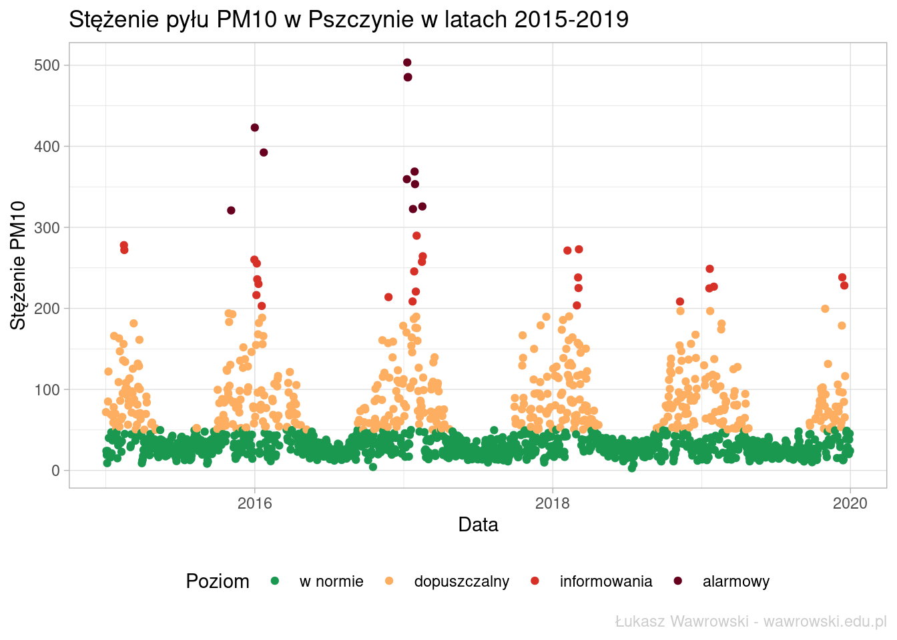
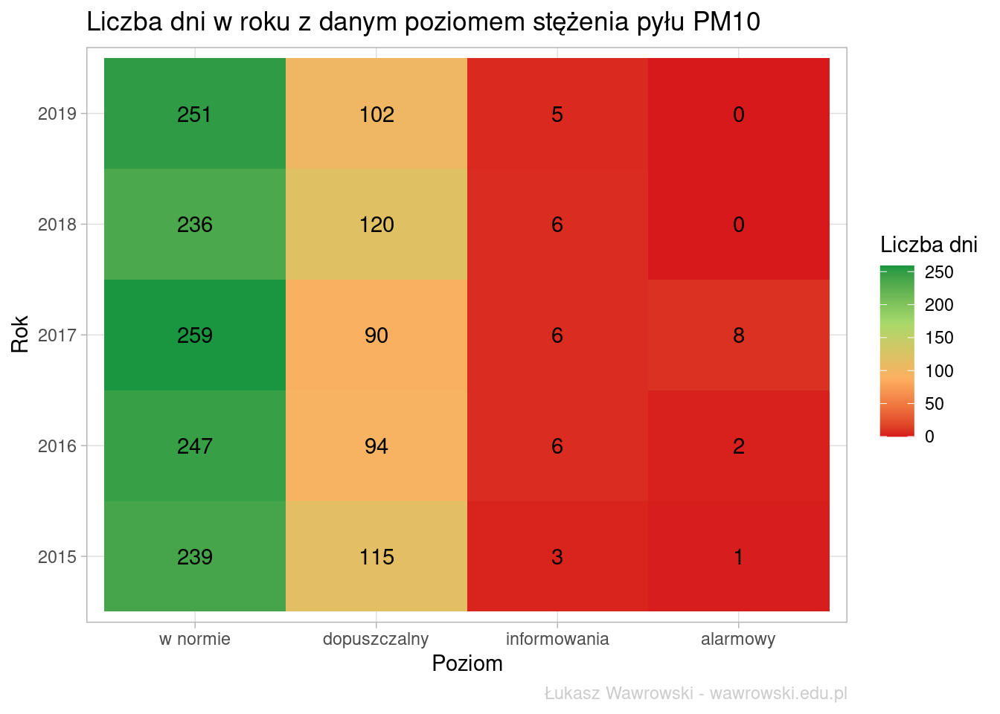
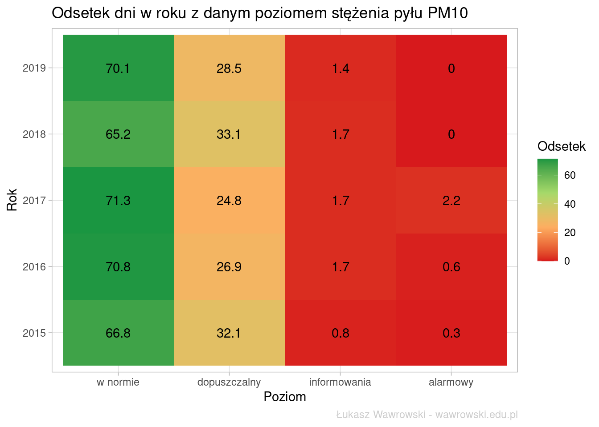
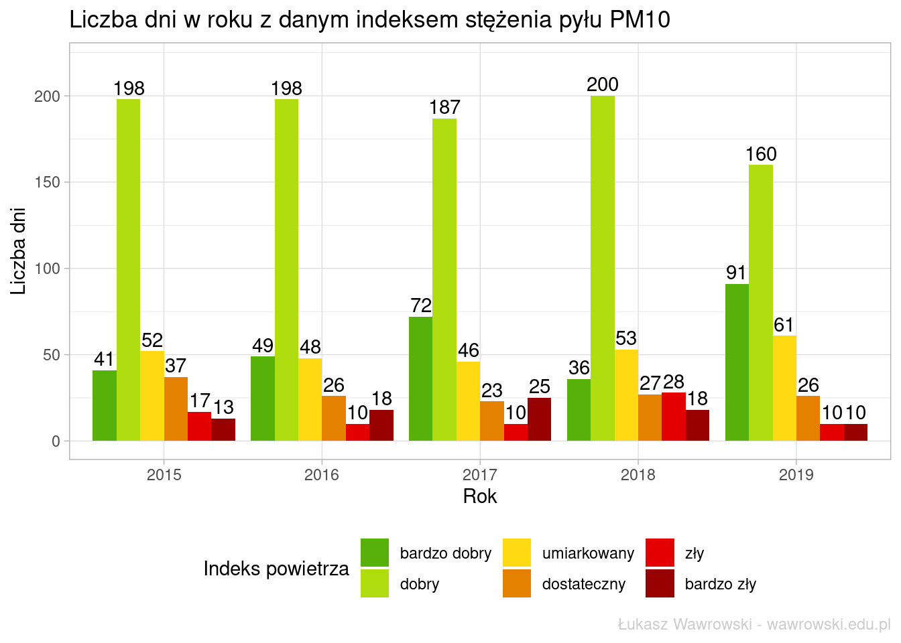
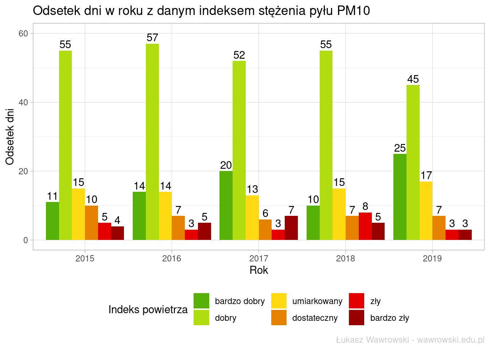
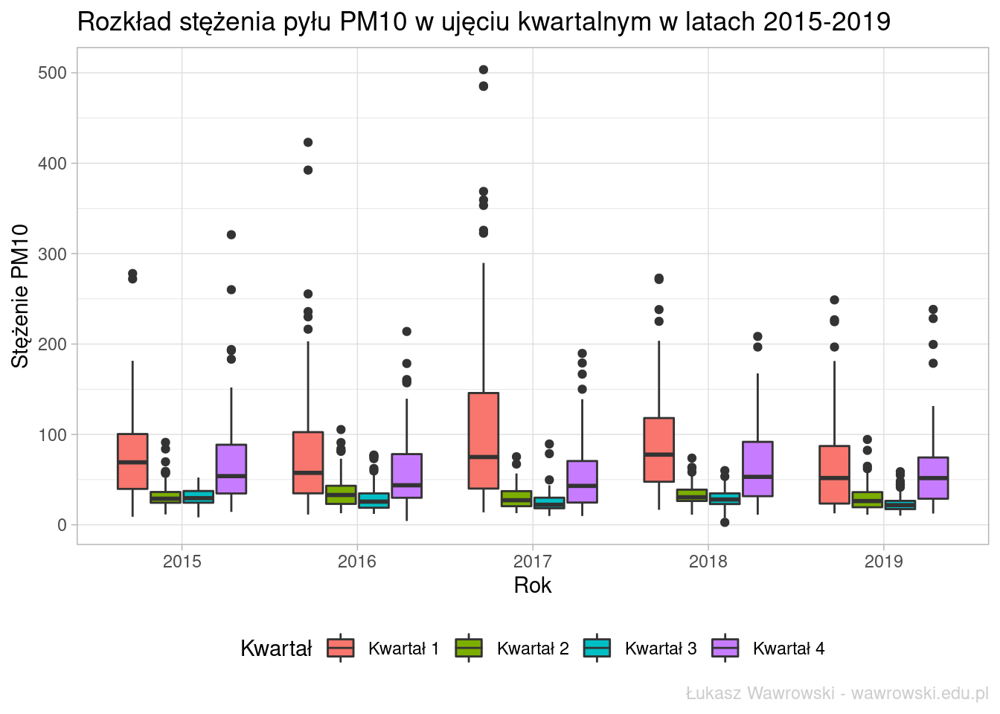
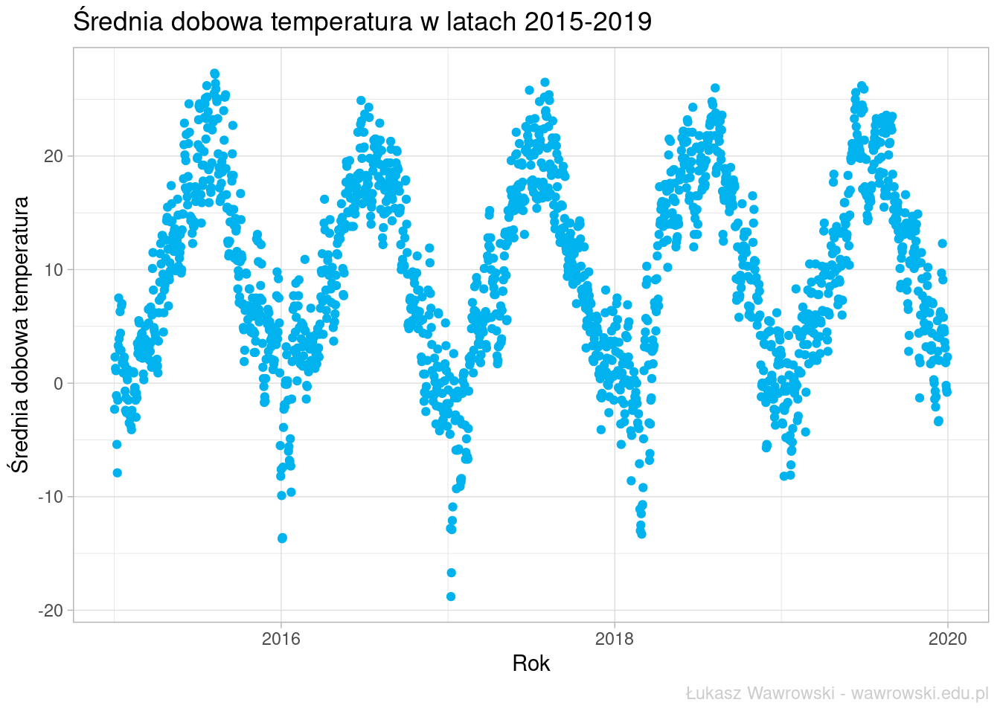
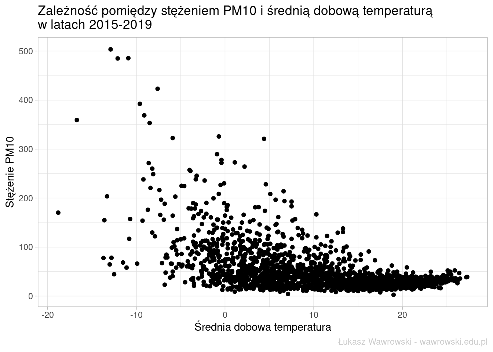
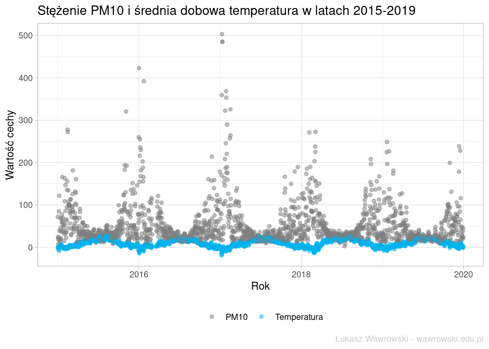
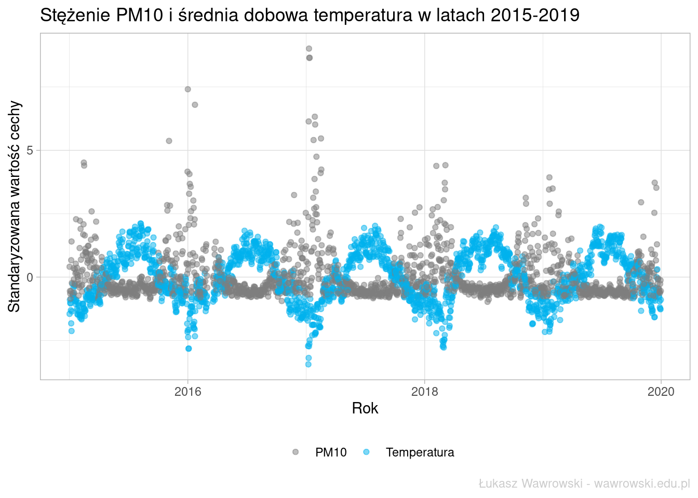

library(tidyverse)
library(readxl)
library(lubridate)
pm10_2015 <- read_xlsx("data/pm10_pszczyna.xlsx", sheet = "2015")
pm10_2016 <- read_xlsx("data/pm10_pszczyna.xlsx", sheet = "2016")
pm10_2017 <- read_xlsx("data/pm10_pszczyna.xlsx", sheet = "2017")
pm10_2018 <- read_xlsx("data/pm10_pszczyna.xlsx", sheet = "2018")
pm10_2019 <- read_xlsx("data/pm10_pszczyna.xlsx", sheet = "2019") %>%
mutate(pm10=as.numeric(str_replace(pm10, ",", ".")))
pm10_pszczyna <- union_all(pm10_2015, pm10_2016) %>%
union_all(., pm10_2017) %>%
union_all(., pm10_2018) %>%
union_all(., pm10_2019) %>%
mutate(data=as_date(data),
dzien_tyg=factor(wday(data),
levels = 1:7,
labels = c("Pn", "Wt", "Śr", "Czw", "Pt", "Sb", "Nd"),
ordered = T),
kwartal=str_c("Kwartał ", quarter(data)),
rok=as.factor(year(data)),
poziom=cut(x = pm10,
breaks = c(0,50,200,300,Inf),
labels = c("w normie", "dopuszczalny", "informowania", "alarmowy"),
ordered_result = T))Zjawisko smogu oraz niskiej emisji jest w ostatnim czasie tematem bardzo często poruszanym przez wszystkie media. Na stronach Głównego Inspektoratu Ochrony Środowiska można znaleźć historyczne dane dotyczące zanieczyszczenia powietrza. Dodatkowo Instytut Meteorologii i Gospodarki Wodnej publikuje archiwalne dane pogodowe. Są one dostępne także poprzez pakiet R o nazwie imgw. Można także na bieżąco monitorować sytuację pogodową korzystając z API.
Dane są, zatem na przykładzie miasta Pszczyna w województwie śląskim zobaczymy co można z nich wydobyć.
Jakość powietrza
Stacja w Pszczynie zbiera dane od 2015 roku i znajduje się przy ulicy Bogedaina. Niestety zbiera informacje wyłącznie na temat stężenia pyłu PM10. Dane o jakości powietrza udostępniane są w postaci plików Excela i niezbędne informacje trzeba z nich wydobyć. Zrobiłem to ręcznie i do R wczytałem jeden plik ze wszystkimi danymi. Przy okazji uporządkowałem daty i na podstawie wartości norm pyłów sklasyfikowałem odpowiednie wartości.
W pierwszej kolejności ocenimy kompletność danych pod kątem liczby braków danych w każdym z analizowanych lat.
pm10_pszczyna %>%
filter(is.na(pm10)) %>%
count(rok) %>%
knitr::kable()| rok | n |
|---|---|
| 2015 | 7 |
| 2016 | 17 |
| 2017 | 2 |
| 2018 | 3 |
| 2019 | 7 |
Niestety z niewiadomych przyczyn brakuje pomiarów dla kilku dni w każdym roku. Aż 17 dni w roku 2016 nie była zbierana informacja o stężeniu PM10. Był to okres od 3 do 18 marca. W pozostałych latach są to pojedyncze dni i nie stanowią znaczącej wartości względem całego roku. Te obserwacje zostaną z analizy wyeliminowane. Alternatywnie można zastosować wybraną metodę imputacji danych.
Następnie przeanalizujemy wartości stężenia PM10 w ujęciu czasowym.
p <- pm10_pszczyna %>%
filter(!is.na(pm10)) %>%
ggplot(aes(x=data, y = pm10, color = poziom)) +
geom_point() +
scale_color_manual(name = "Poziom", values = c("#1a9850", "#fdae61", "#d73027", "#67001f")) +
xlab("Data") +
ylab("Stężenie PM10") +
ggtitle("Stężenie pyłu PM10 w Pszczynie w latach 2015-2019") +
labs(caption = "Łukasz Wawrowski - wawrowski.edu.pl") +
theme_light() +
theme(legend.position = "bottom",
plot.caption = element_text(color = "grey80"))
p
Dla lat 2015-2019 wyraźnie widać kolejne pory roku - zimą stężenie pyłów PM10 jest wysokie, a latem niskie i nie przekracza normatywnego poziomu. Pod kątem rekordowo wysokich wartości warty odnotowania jest rok 2016 i 2017. Trzy najwyższe wartości występowały kolejno w dniach 9, 10, 11 stycznia 2017 roku.
Warto bliżej się przyjrzeć zdefiniowanym normom i częstości występowania.
pm10_pszczyna %>%
filter(!is.na(pm10)) %>%
count(rok, poziom) %>%
complete(rok, poziom, fill = list(n = 0)) %>%
ggplot(aes(x = poziom, y = rok, fill = n)) +
geom_tile() +
geom_text(aes(label=n)) +
scale_fill_gradientn(colours = RColorBrewer::brewer.pal(4, "RdYlGn") , name = "Liczba dni") +
xlab("Poziom") +
ylab("Rok") +
ggtitle("Liczba dni w roku z danym poziomem stężenia pyłu PM10") +
labs(caption = "Łukasz Wawrowski - wawrowski.edu.pl") +
theme_light() +
theme(plot.caption = element_text(color = "grey80"))
W ostatnich 5 latach nie nastąpiła żadne spektakularne zwiększenie liczby dni ze stężeniem PM10 w normie. Można jedynie odnotować, że w latach 2018-2019 PM10 nie przekroczyły poziomu alarmowego.
Spójrzmy jeszcze na te same dane w ujęciu procentowych.
pm10_pszczyna %>%
filter(!is.na(pm10)) %>%
count(rok, poziom) %>%
complete(rok, poziom, fill = list(n = 0)) %>%
group_by(rok) %>%
mutate(proc=round(n/sum(n)*100,1)) %>%
ggplot(aes(x = poziom, y = rok, fill = proc)) +
geom_tile() +
geom_text(aes(label=proc)) +
scale_fill_gradientn(colours = RColorBrewer::brewer.pal(4, "RdYlGn"), name = "Odsetek") +
xlab("Poziom") +
ylab("Rok") +
ggtitle("Odsetek dni w roku z danym poziomem stężenia pyłu PM10") +
labs(caption = "Łukasz Wawrowski - wawrowski.edu.pl") +
theme_light() +
theme(plot.caption = element_text(color = "grey80"))
Wniosek z powyższego wykresu nie jest zbyt pokrzepiający - tylko przez co najwyżej 71% dni w roku można cieszyć się w miarę czystym powietrzem. Z kolei 1/3 dni w roku to dni z poziomem powyżej 50 jednostek.
Główny Inspektorat Ochrony Środowiska publikuje także dane na temat jakości powietrza w postaci indeksu jakości powietrza, którzy przyporządkowuje stężenie pyłu do jednej z sześciu kategorii.
| Indeks jakości powietrza | PM10 |
|---|---|
| Bardzo dobry | 0-20 |
| Dobry | 20,1-50 |
| Umiarkowany | 50,1-80 |
| Dostateczny | 80,1-110 |
| Zły | 110,1-150 |
| Bardzo zły | > 150 |
Kolejny wykres przedstawia liczbę dni z danym indeksem jakości powietrza zgodnie z powyższą klasyfikacją.
pm10_pszczyna %>%
filter(!is.na(pm10)) %>%
count(rok, indeks) %>%
complete(rok, indeks, fill = list(n = 0)) %>%
ggplot(aes(x = rok, y = n, fill = indeks)) +
geom_col(position = "dodge") +
geom_text(aes(label=n), position = position_dodge(width = 0.9), vjust = -0.3) +
scale_fill_manual(values = c("#57B108","#B0DD10","#FFD911","#E58100","#E50000","#990000"),
name = "Indeks powietrza") +
xlab("Rok") +
ylab("Liczba dni") +
ylim(0,220) +
ggtitle("Liczba dni w roku z danym indeksem stężenia pyłu PM10") +
labs(caption = "Łukasz Wawrowski - wawrowski.edu.pl") +
theme_light() +
theme(legend.position = "bottom",
plot.caption = element_text(color = "grey80"))
W roku 2019 dni z bardzo dobrym i dobrym indeksem powietrza było w sumie 251, w roku 2018 - 236, a w 2017 - 259. Z kolei takich dni, kiedy odnotowano zły i bardzo zły indeks powietrza było odpowiednio 20 (2019), 46 (2018) i 35 (2017).
Te same dane można także przedstawić w ujęciu procentowym.
pm10_pszczyna %>%
filter(!is.na(pm10)) %>%
count(rok, indeks) %>%
complete(rok, indeks, fill = list(n = 0)) %>%
group_by(rok) %>%
mutate(proc=round(n/sum(n)*100)) %>%
ggplot(aes(x = rok, y = proc, fill = indeks)) +
geom_col(position = "dodge") +
geom_text(aes(label=proc), position = position_dodge(width = 0.9), vjust = -0.3) +
scale_fill_manual(values = c("#57B108","#B0DD10","#FFD911","#E58100","#E50000","#990000"),
name = "Indeks powietrza") +
xlab("Rok") +
ylab("Odsetek dni") +
ylim(0,60) +
ggtitle("Odsetek dni w roku z danym indeksem stężenia pyłu PM10") +
labs(caption = "Łukasz Wawrowski - wawrowski.edu.pl") +
theme_light() +
theme(legend.position = "bottom",
plot.caption = element_text(color = "grey80"))
Na podstawie danych z powyższego wykresu można stwierdzić, że 60% dni w roku 2019 jakość powietrza była dobra lub bardzo dobra. W roku 2018 te dni stanowiły 65%, a w 2017 - 72%. Z kolei zły i bardzo zły indeks powietrza dotyczył 6% dni 2019 roku, 13% dni 2018 roku oraz 10% dni dla roku 2017. Na podstawie tak krótkiego szeregu czasowego nie można jednak wnioskować na temat istnienia trendu.
Kolejny wykres przedstawia wykresy pudełkowe stężenia PM10 w podziale na lata i kwartały. Wykresy pudełkowe przedstawiają rozkład w postaci wartości minimalnej, kwartyla dolnego (25% obserwacji poniżej, 75% obserwacji powyżej), mediany (50% obserwacji poniżej, 50% obserwacji powyżej), kwartyla górnego (75% obserwacji poniżej, 25% obserwacji powyżej) oraz maksimum.
pm10_pszczyna %>%
filter(!is.na(pm10)) %>%
ggplot(aes(x=rok, y=pm10, fill=kwartal)) +
geom_boxplot() +
scale_fill_discrete(name = "Kwartał") +
xlab("Rok") +
ylab("Stężenie PM10") +
ggtitle("Rozkład stężenia pyłu PM10 w ujęciu kwartalnym w latach 2015-2019") +
labs(caption = "Łukasz Wawrowski - wawrowski.edu.pl") +
theme_light() +
theme(legend.position = "bottom",
plot.caption = element_text(color = "grey80"))
Wykres przedstawia wyraźną tendencję występowania wysokich wartości PM10 w pierwszym i czwartym kwartale. Z kolei w drugich i czwartych kwartałach wartości maksymalne nieznacznie wykraczają ponad wartość 100, natomiast mediana nigdy nie przekracza przyjętego jako norma poziomu 50.
Temperatura powietrza
W drugiej części analizy wykorzystamy dane dotyczące temperatury.
library(imgw)
d <- meteo_daily(rank = "climate", year = 2015:2019)
imgw_pszczyna <- d %>%
filter(station == "PSZCZYNA") %>%
mutate(data=as_date(str_c(yy,"-",mm,"-",day)))Zbiór danych zawiera wiele różnych cech takich jak: temperatura, wilgotność, wysokość pokrywy śnieżnej czy stopień zachmurzenia. Szczęśliwie zbiór nie zawiera braków danych. Interesującą nas zmienną będzie średnia dobowa temperatura, której wykres przedstawiony jest poniżej.
ggplot(imgw_pszczyna, aes(x=data, y=t2m_mean_daily)) +
geom_point(color = "deepskyblue2") +
xlab("Rok") +
ylab("Średnia dobowa temperatura") +
ggtitle("Średnia dobowa temperatura w latach 2015-2019") +
labs(caption = "Łukasz Wawrowski - wawrowski.edu.pl") +
theme_light() +
theme(legend.position = "bottom",
plot.caption = element_text(color = "grey80"))
Podobnie jak w przypadku stężenia PM10 dla średniej dobowej temperatury można stwierdzić występowanie sezonowości.
Jakość powietrza a temperatura powietrza
Wykorzystamy teraz zebrane dane do poszukania zależności pomiędzy stężeniem PM10 a temperaturą. W pierwszej kolejności zestawimy te dane na wykresie punktowym.
pm10_imgw <- select(imgw_pszczyna, data, t2m_mean_daily) %>%
inner_join(., select(pm10_pszczyna, data, pm10), by="data") %>%
filter(!is.na(pm10))
ggplot(pm10_imgw, aes(y=pm10, x=t2m_mean_daily)) +
geom_point() +
ylab("Stężenie PM10") +
xlab("Średnia dobowa temperatura") +
ggtitle("Zależność pomiędzy stężeniem PM10 i średnią dobową temperaturą \nw latach 2015-2019")+
labs(caption = "Łukasz Wawrowski - wawrowski.edu.pl") +
theme_light() +
theme(plot.caption = element_text(color = "grey80"))
Nie można tu wskazać zależności liniowej - są dni z niską temperaturą i niskim stężeniem PM10, a także takie, gdzie to stężenie jest bardzo wysokie. Faktem jest natomiast, że w upalne dni stężenie PM10 jest niskie. Obliczenie współczynnika korelacji liniowej Pearsona wskazuje na wartość \(r=-0,53\) czyli umiarkowaną zależność ujemną. Przy czym jest to tylko informacja o współwystępowaniu obu zjawisk, a nie zależności przyczynowo-skutkowej.
Na kolejnym wykresie zestawimy obie analizowane cechy z uwzględnieniem czasu.
pm10_imgw %>%
pivot_longer(-data) %>%
mutate(name=factor(name,
levels = c("pm10", "t2m_mean_daily"),
labels = c("PM10", "Temperatura"))) %>%
ggplot(aes(x=data, y=value, color=name)) +
geom_point(alpha = 0.5) +
scale_color_manual(name = "", values = c("grey50", "deepskyblue2")) +
xlab("Rok") +
ylab("Wartość cechy") +
ggtitle("Stężenie PM10 i średnia dobowa temperatura w latach 2015-2019") +
labs(caption = "Łukasz Wawrowski - wawrowski.edu.pl") +
theme_light() +
theme(legend.position = "bottom",
plot.caption = element_text(color = "grey80"))
Widoczne jest wzajemne przeciwstawianie się obserwacji, natomiast ze względu na to, że te cechy są mierzone na różnych skalach to trudno te wielkości porównywać. Zatem zostanie zastosowana standaryzacja, co umożliwi porównanie wartości cech.
pm10_imgw_std <- select(imgw_pszczyna, data, t2m_mean_daily) %>%
inner_join(., select(pm10_pszczyna, data, pm10), by="data") %>%
filter(!is.na(pm10)) %>%
mutate_if(is.numeric, scale) %>%
pivot_longer(-data) %>%
mutate(name=factor(name,
levels = c("pm10", "t2m_mean_daily"),
labels = c("PM10", "Temperatura")))
ggplot(pm10_imgw_std, aes(x=data, y=value, color=name)) +
geom_point(alpha = 0.5) +
# geom_smooth(se = F, size = 2) +
scale_color_manual(name = "", values = c("grey50", "deepskyblue2")) +
xlab("Rok") +
ylab("Standaryzowana wartość cechy") +
ggtitle("Stężenie PM10 i średnia dobowa temperatura w latach 2015-2019") +
labs(caption = "Łukasz Wawrowski - wawrowski.edu.pl") +
theme_light() +
theme(legend.position = "bottom",
plot.caption = element_text(color = "grey80"))
Na powyższej grafice widać wyraźnie, że podczas dni z wysoką temperaturą powietrza poziom stężenia PM10 utrzymuje się na niskim poziomie. Z kolei spadek temperatury w większości przypadków pociąga za sobą wzrost stężenia PM10.
Podsumowanie
W tym poście zostały przedstawione tylko dwie cechy - poziom pyłów PM10 oraz średnia dobowa temperatura powietrza. W analizie smogu należałoby uwzględnić także inne cechy związane z warunkami atmosferycznymi. Na podstawie wielu takich czynników można pokusić się o stworzenie modelu prognozującego stężenie pyłów PM10.
Zbiory danych i kody użyte w analizie znajdują się w repozytorium na githubie.